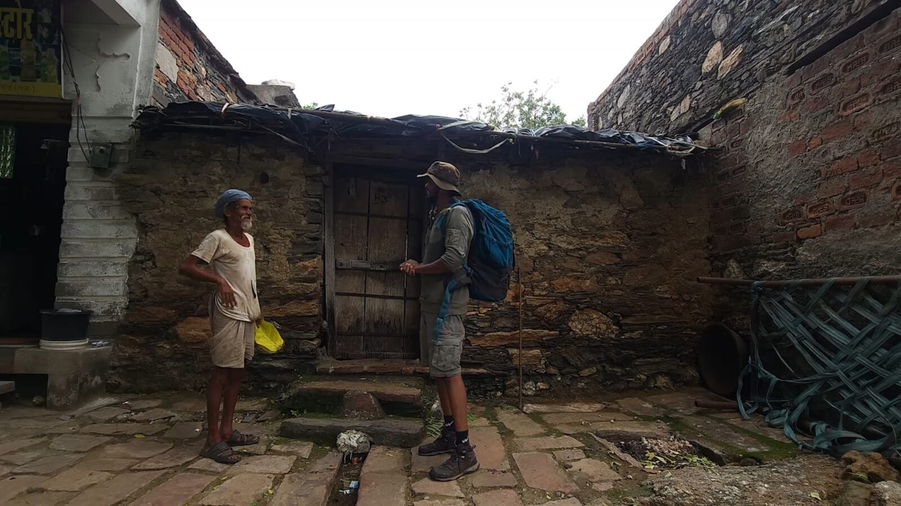
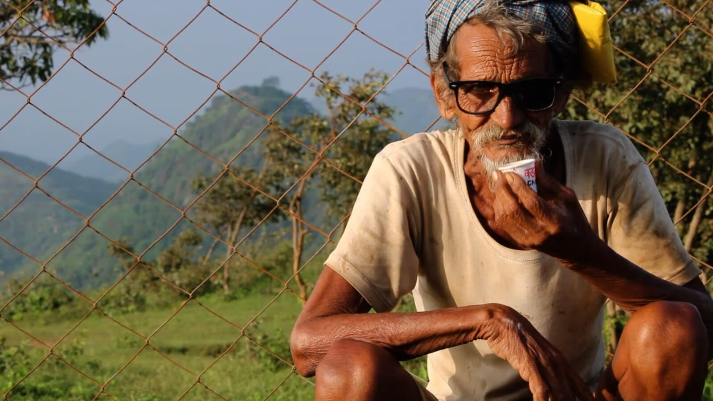

The conversation that started it
It was the end of June.
Summer was slowly giving way to the monsoon, and one evening I was sitting at a tea spot on the outskirts of Bhilwara with two of my friends, Ajit and Vaibhav.
We were talking about the upcoming monsoon trekking season, my work in the mountains, and the usual conversations that move from business to life and then somehow to YouTube.
At some point, the conversation turned toward the stories I had experienced over the years. One of my friends asked me a simple question:
“Why aren't you documenting your experiences in the mountains through long-form content?”
He reminded me that I had already been working in the mountains for almost ten years. If I had started documenting these experiences earlier, perhaps I would have built something much bigger by now.
Then he said something else. He had known me for around sixteen years and believed I was a storyteller. That conversation stayed with me long after that evening ended.
A few days later, during one of my preparation treks, I started thinking about what my first story could be. I didn't want to make a video simply about a trek. I wanted to follow a person whose everyday life was connected to the mountains.
That was when the idea of documenting the life of an Aravali shepherd came to me.
Finding my first story
I have been operating trekking and camping experiences in the Kumbhalgarh region for around six years, so finding someone who lived and worked in these mountains wasn't particularly difficult. But eventually, the story found me.
While I was working on the mountains one day, I met Bhairaram Ji. He was 72 years old. He lived in a small hut not far from my own village home in Pasun, and he already knew who I was — he had seen me regularly over the years while I was leading people through the mountains.
I told him that I wanted to spend a day with him and document his life with the goats. He simply agreed. There was no complicated planning from his side. Just a simple yes.
And suddenly, I had my first story.

“Let's become herders”
Around the middle of July, I returned to my village home in Pasun, in the Kumbhalgarh region of Rajasthan.
A friend of mine, Abhimanyu, who works in the same outdoor field but primarily in the Himalayas, especially around Leh-Ladakh, also came to stay for a few days. I picked him up from Rajsamand after he arrived from the Delhi side. We loaded four rucksacks onto my Bullet 350 and rode toward my village.
That evening, I explained my YouTube idea to him. His response was simple:
“Okay, let's become herders.”
The next morning, we were ready.
Seeing familiar mountains through a new lens
The weather was cloudy when we started. We were standing at the foothills of the mountain, but for me, this wasn't going to be another normal day in the Aravallis.
I had been coming to these mountains for years. I had led trekkers here. I had photographed landscapes, camps and people. I knew the trails. But that morning, I was looking at everything through a different lens. I was there as a filmmaker.
For years, photography had mostly been a part of my commercial work. I would photograph trekkers, landscapes, camps and different moments from expeditions. This time, I wasn't simply trying to capture a beautiful photograph. I was trying to tell a story. And I had never done that before.
I checked my cameras and other equipment, prepared our lunch, and started the shoot from our village base. Every shot felt exciting. At the same time, I was confused. Should I use the action camera for this shot? Should I use my phone? How should I record the sound? How should I use the microphone? I was learning everything while doing it.
Meeting Bhairaram Ji

Around 9:30 in the morning, we reached Bhairaram Ji's hut, only a short distance from where I was staying. We met casually and started recording his morning routine.
He had around seven or eight goats with him. For Bhairaram Ji, these goats were much more than livestock. They were his family.
He has no children. His wife passed away a few years ago, and he now lives alone. For more than three decades, the mountains, his goats and his shepherd friends have been a central part of his everyday life.
As I watched him prepare for the day, I began to understand that I wasn't simply filming a shepherd taking his goats into the mountains. I was entering someone's entire way of life.
Following a 72-year-old into the mountains
We finally started moving around 11 AM. And almost immediately, I had a problem. I had to keep running ahead of him and then back behind him to get the shots I wanted.
Bhairaram Ji was 72 years old, but his pace and endurance were something I wasn't prepared for. I have spent years trekking and leading groups, so I was confident I could keep up. But trying to walk, carry equipment, think about composition, record sound and simultaneously keep up with a 72-year-old shepherd was a completely different experience.
We crossed Pasun village and continued toward the nearby village of Jadfa. After roughly an hour and a half, we reached the point where the actual mountain climb began. Along the way, we met other villagers and shepherds who regularly use these mountains. Bhairaram Ji met some of his friends, exchanged a few words, and continued.
Then came the difficult part. It was afternoon. The humidity was high. I was carrying around 10 kilograms of camera equipment on my back, while Abhimanyu carried water and some other essentials.
And Bhairaram Ji? He simply kept climbing. He moved through the mountain almost like an endurance athlete. At that moment, my job as a filmmaker became physically difficult. I wanted to capture him from different angles, but I also had to keep moving. Eventually, we managed to reach the ridgeline. It was time to rest.
His mountains, his knowledge
After around half an hour, we started moving again. We eventually reached the upper part of the mountain, at approximately 1,200–1,250 metres. There was a broad, plateau-like area at the top, and this was one of the places where the shepherds regularly brought their goats.
For me, it was a strange and beautiful feeling. I had been leading trekkers through these mountains for years. I knew these trails as routes. But now I was walking through them with someone who experienced the same landscape completely differently.
I listened to him. I watched how he moved. I listened to his stories. And slowly, I began to realize that the mountain wasn't just a trekking destination. For him, it was home.
He knows hidden water sources in these mountains, places that most visitors would never notice. Because of that knowledge, he doesn't necessarily need to carry a water bottle with him. He knows where the mountain keeps its water. He also knows its dangers. He told us about leopards and the constant risk of predators.
The mountains provide his life, but they also demand awareness and respect. For these shepherds, the higher mountain areas become part of their seasonal routine during the monsoon and winter months. Their relationship with the landscape follows a rhythm that has little to do with tourism or trekking seasons. It is simply their life.
Seven or eight goats, and a family
Bhairaram Ji has been living this shepherd's life for more than thirty years. Today, he lives alone. His wife is no longer there. He has no children. He sometimes talks about his old days with his wife, and there is a quiet sense that he misses that life. But he has found his own way to continue.
His goats are his family. His shepherd friends are his companions. And the mountains are his home.
There was something deeply interesting about watching him move through this landscape. He didn't seem to need much. He didn't need a map. He didn't need a GPS. He didn't need to search for a water source. He knew the mountain through experience. For someone like me, who works professionally in the outdoors, that was something worth learning from.
Tea at the top

Later in the afternoon, I met another shepherd. He also knew me. He had been watching me come through these trails with trekkers for several years. It was another reminder that although we often think we are simply passing through a landscape, the people who live there notice us too.
By around 5:30 PM, we reached another shepherd's hut near the top. He prepared tea for us. We sat together, drank tea and talked. The atmosphere became completely different from the difficult climb earlier in the afternoon. The shepherds were laughing, joking, dancing and enjoying the moment.
And for the first time that day, I stopped thinking so much about the camera. I was simply there. Watching. Listening. Enjoying the mountain. I managed to capture some drone shots and portraits as the afternoon slowly moved toward evening.
The last light
We eventually started descending. The sun was getting lower, and the mountain was entering that brief period when everything seems to change. The light became golden. The shepherds started walking downhill with their goats.
I stopped somewhere along the trail and sat down. Instead of immediately thinking about the next shot, I simply watched. The same mountains I had walked through for six years suddenly looked different. The light was different. The landscape felt different. And, more importantly, I was looking at it differently.
It was around 6:45 PM when I captured what would become the final shot of the story. The sun had already gone down. The last light was fading. The shepherds were slowly making their way home. And I remember looking around and thinking:
“There is a whole mine of visual stories here.”
Maybe I had been walking through these mountains for years without really seeing everything they had to tell me. That evening, I understood that filmmaking could become another way of exploring the mountains. Not just documenting landscapes. Not just recording adventures. But looking at people, their lives, their relationships with the land and the small moments that usually go unnoticed.
What I took away from that day
We were physically tired when we finally started heading back. But somehow, our minds were happy. The shepherds were happy. The atmosphere had been simple, warm and full of life.
Bhairaram Ji had very limited resources, no children and was living alone after losing his wife. Yet he had found his own way of living. His goats were his family. His friends were around him. And the mountains gave his days a rhythm and a purpose.
I had gone there thinking I was going to document his life. But somewhere along the way, the story became personal for me too. I learned that you don't always need to travel somewhere completely unknown to find a story. Sometimes, the story is already there. Sometimes, the people who know a landscape best are the ones who have been quietly living in it for decades.
And sometimes, you need to stop being the person who leads the way and simply become the person who watches. For six years, I had been leading people through these mountains. That day, I wasn't leading anyone.
“I was following.”
And by following a 72-year-old shepherd through the Aravallis, I discovered a completely different way of seeing the mountains I thought I already knew.
We returned to our room, prepared some food, and finally went to sleep. After such a long day in the mountains, I slept better than I had in a long time. It was a simple day. But for me, it was the beginning of something new. It was the day I started looking at the Aravallis not only as a mountain range I work in, but as a place full of stories waiting to be told.
Expedition details
| Experience | A Day with an Aravali Shepherd |
| Location | Pasun & Jadfa villages, Kumbhalgarh region |
| District | Rajsamand, Rajasthan |
| Landscape | Southern Aravallis / Mewar |
| Terrain | Mountain villages, ridges and Bhorat Plateau landscape |
| Village elevation | Approx. 650 m |
| Mountain ridge | Approx. 1,200–1,250 m |
| Season | Monsoon |
| Time of expedition | Mid-July |
| Research & shoot | 3 days |
Watch the film
Walk these ridgelines yourself
The same Kumbhalgarh mountains, guided by people who know them by heart. Camping, trekking and rappelling — small groups, left as we found them.
Plan your trip